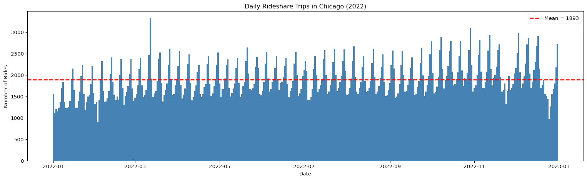
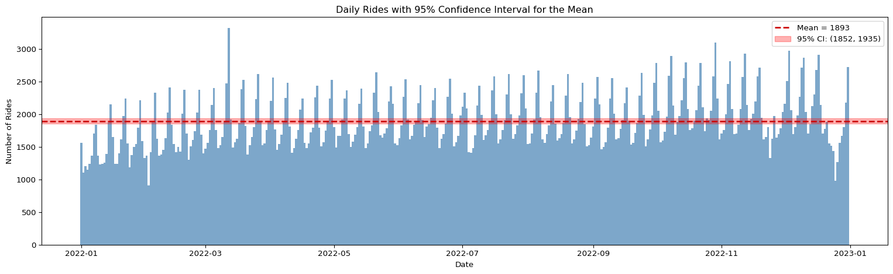
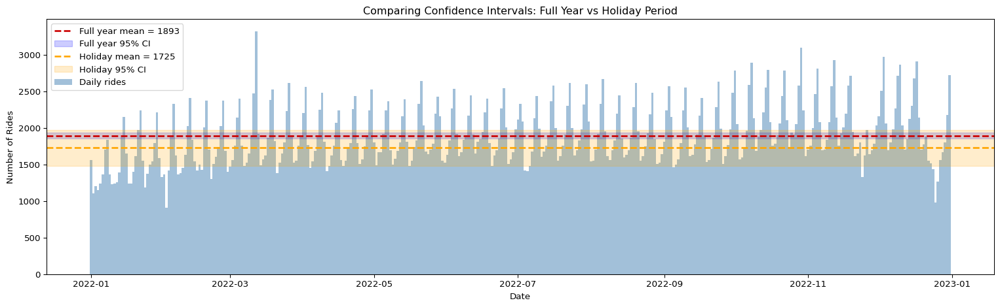
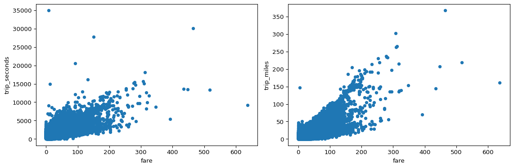
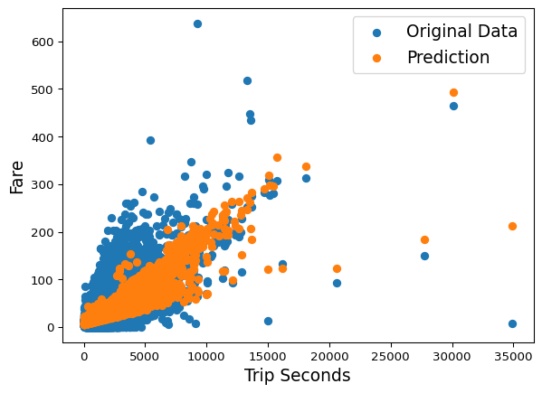

import pandas as pd
import numpy as np
import matplotlib.pyplot as plt
from scipy import stats
import statsmodels.api as sm
import statsmodels.formula.api as smf
%config InlineBackend.figure_formats = ['png']Lab: Confidence Intervals and Hypothesis Testing
statistics
In this lab, you will apply the ideas from confidence intervals and comparing two populations to a real dataset: Chicago rideshare trips from 2022. You…
Introduction
In this lab, you will apply the ideas from confidence intervals and comparing two populations to a real dataset: Chicago rideshare trips from 2022. You will compute confidence intervals for the average number of daily rides, compare weekday and weekend ridership using a hypothesis test, and build a linear regression model to predict fares.
Along the way, you will practice working with pandas, numpy, scipy, and statsmodels. Every code cell includes comments so you can follow along even if you are still getting comfortable with Python.
Learning objectives:
- Compute and interpret a confidence interval for a population mean
- Understand how sample size affects the width of a confidence interval
- Perform a two-sample t-test and interpret the p-value
- Fit a linear regression model and use it for prediction
Setup and Loading Data
We start by importing the libraries we need. pandas is for working with tables of data, numpy gives us math functions, matplotlib creates plots, scipy.stats provides statistical distributions and tests, and statsmodels lets us fit regression models.
Next we load the Chicago rideshare dataset. The parse_dates argument tells pandas to read the trip_start_timestamp and date columns as proper date objects rather than plain text. This makes it easy to filter by date ranges and group by day later on.
df = pd.read_csv(
'../../media/rideshare_2022_cleaned.csv',
parse_dates=['trip_start_timestamp', 'date']
)
df.head()| trip_start_timestamp | trip_seconds | trip_miles | fare | tip | additional_charges | trip_total | shared_trip_authorized | trips_pooled | pickup_centroid_latitude | pickup_centroid_longitude | dropoff_centroid_latitude | dropoff_centroid_longitude | date | weekday | |
|---|---|---|---|---|---|---|---|---|---|---|---|---|---|---|---|
| 0 | 2022-01-01 | 3905.0 | 44.5 | 55.0 | 0.0 | 11.25 | 66.25 | 0 | 1 | 41.972563 | -87.678846 | NaN | NaN | 2022-01-01 | Saturday |
| 1 | 2022-01-01 | 2299.0 | 25.0 | 32.5 | 7.0 | 7.18 | 46.68 | 0 | 1 | 41.878866 | -87.625192 | NaN | NaN | 2022-01-01 | Saturday |
| 2 | 2022-01-01 | 275.0 | 1.5 | 7.5 | 0.0 | 1.02 | 8.52 | 0 | 1 | 41.792357 | -87.617931 | 41.812949 | -87.617860 | 2022-01-01 | Saturday |
| 3 | 2022-01-01 | 243.0 | 1.0 | 5.0 | 0.0 | 2.36 | 7.36 | 0 | 1 | 41.936310 | -87.651563 | 41.943155 | -87.640698 | 2022-01-01 | Saturday |
| 4 | 2022-01-01 | 364.0 | 1.3 | 5.0 | 0.0 | 2.36 | 7.36 | 0 | 1 | 41.921855 | -87.646211 | 41.936237 | -87.656412 | 2022-01-01 | Saturday |
Daily Rides Analysis
Before computing any confidence intervals, we need to summarize the data at the daily level. Each row in the original dataset represents a single trip, but we want to know how many trips happened each day. The code below groups the data by date and counts the number of rows in each group.
daily = df.groupby('date').size().reset_index(name='daily_rides')
daily.head()| date | daily_rides | |
|---|---|---|
| 0 | 2022-01-01 | 1557 |
| 1 | 2022-01-02 | 1102 |
| 2 | 2022-01-03 | 1207 |
| 3 | 2022-01-04 | 1151 |
| 4 | 2022-01-05 | 1235 |
Now we compute the sample mean and sample standard deviation of the daily ride counts. These two numbers summarize the center and spread of our data. The sample mean (\(\bar{x}\)) estimates the true average daily rides (population mean \(\mu\)), and the sample standard deviation (\(s\)) measures how much the daily counts vary from day to day.
n = len(daily)
sample_mean = daily['daily_rides'].mean()
sample_std = daily['daily_rides'].std()
print(f"Number of days (n): {n}")
print(f"Sample mean: {sample_mean:.2f}")
print(f"Sample standard deviation: {sample_std:.2f}")Number of days (n): 365
Sample mean: 1893.42
Sample standard deviation: 404.21You should see a mean of approximately 1893.42 and a standard deviation of approximately 404.21. This tells us that on a typical day there were about 1,893 rides, but that number varied quite a bit from day to day.
Let us visualize the daily ride counts with a bar chart. The red horizontal line marks the sample mean so you can see how individual days compare to the average.
fig, ax = plt.subplots(figsize=(16, 5))
ax.bar(daily['date'], daily['daily_rides'], color='#4682B4', width=1.0)
ax.axhline(y=sample_mean, color='red', linestyle='--', linewidth=2, label=f'Mean = {sample_mean:.0f}')
ax.set_xlabel('Date')
ax.set_ylabel('Number of Rides')
ax.set_title('Daily Rideshare Trips in Chicago (2022)')
ax.legend()
plt.tight_layout()
plt.show()
Notice how the daily counts bounce above and below the mean. Some days are much busier than others. This variability is exactly why we need confidence intervals: we want to express not just our best guess of the population mean, but also how uncertain that guess is.
Confidence Intervals for Population Mean
Recall from the confidence intervals page that a confidence interval gives us a range of plausible values for the true population mean \(\mu\). We treat our 365 daily counts as an i.i.d. sample from the population of all possible daily ride counts.
The formula for a 95% confidence interval using the t-distribution is:
\[ \bar{x} \pm t^* \cdot \frac{s}{\sqrt{n}} \]
where \(t^*\) is the critical value from the t-distribution with \(n - 1\) degrees of freedom, \(s\) is the sample standard deviation, and \(n\) is the sample size.
The code below computes the critical value and the margin of error (which we call ci_margin). We use scipy.stats.t.ppf to find the t-value that leaves 2.5% in each tail (for a two-sided 95% interval).
confidence_level = 0.95
alpha = 1 - confidence_level
# Critical value from the t-distribution
critical_value = stats.t.ppf(1 - alpha / 2, df=n - 1)
print(f"Critical value (t*): {critical_value:.3f}")
# Margin of error
ci_margin = critical_value * sample_std / np.sqrt(n)
print(f"Margin of error: ±{ci_margin:.2f}")
# Confidence interval bounds
ci_lower = sample_mean - ci_margin
ci_upper = sample_mean + ci_margin
print(f"95% Confidence Interval: ({ci_lower:.2f}, {ci_upper:.2f})")Critical value (t*): 1.967
Margin of error: ±41.61
95% Confidence Interval: (1851.81, 1935.03)You should see a critical value of approximately 1.967 and a margin of error of approximately ±41.56. This means we are 95% confident that the true average number of daily rides falls within about 42 rides of our sample mean.
Now let us plot the daily rides again, this time with a shaded band showing the confidence interval around the mean. The shaded region represents our range of uncertainty about the true population mean.
fig, ax = plt.subplots(figsize=(16, 5))
ax.bar(daily['date'], daily['daily_rides'], color='#4682B4', width=1.0, alpha=0.7)
ax.axhline(y=sample_mean, color='#CC0000', linestyle='--', linewidth=2, label=f'Mean = {sample_mean:.0f}')
ax.axhspan(ci_lower, ci_upper, alpha=0.3, color='red', label=f'95% CI: ({ci_lower:.0f}, {ci_upper:.0f})')
ax.set_xlabel('Date')
ax.set_ylabel('Number of Rides')
ax.set_title('Daily Rides with 95% Confidence Interval for the Mean')
ax.legend()
plt.tight_layout()
plt.show()
The shaded band is relatively narrow compared to the full range of daily counts. That is because our sample size (\(n = 365\)) is large. With more data points, we can estimate the population mean more precisely.
Confidence Intervals During Holidays
What if we only look at a subset of the data? During the holiday season (late December), ridership patterns might be different. Let us filter to just the dates after December 17, 2022, and compute a new confidence interval.
The key insight here: fewer data points means more uncertainty, which means a wider confidence interval.
# Filter for holiday period
holiday_daily = daily[daily['date'] > '2022-12-17']
n_holiday = len(holiday_daily)
holiday_mean = holiday_daily['daily_rides'].mean()
holiday_std = holiday_daily['daily_rides'].std()
print(f"Holiday period days (n): {n_holiday}")
print(f"Holiday mean: {holiday_mean:.2f}")
print(f"Holiday std: {holiday_std:.2f}")Holiday period days (n): 14
Holiday mean: 1725.21
Holiday std: 426.10Now we compute the 95% confidence interval for the holiday period. Notice how the smaller sample size (\(n\) is much less than 365) produces a wider interval.
# Critical value for holiday period (fewer degrees of freedom)
critical_value_holiday = stats.t.ppf(1 - alpha / 2, df=n_holiday - 1)
ci_margin_holiday = critical_value_holiday * holiday_std / np.sqrt(n_holiday)
holiday_ci_lower = holiday_mean - ci_margin_holiday
holiday_ci_upper = holiday_mean + ci_margin_holiday
print(f"Holiday critical value: {critical_value_holiday:.3f}")
print(f"Holiday margin of error: ±{ci_margin_holiday:.2f}")
print(f"Holiday 95% CI: ({holiday_ci_lower:.2f}, {holiday_ci_upper:.2f})")Holiday critical value: 2.160
Holiday margin of error: ±246.02
Holiday 95% CI: (1479.19, 1971.23)You should see that the holiday mean is approximately 2036.57 and the confidence interval is noticeably wider than the full-year interval. This makes intuitive sense: with only about two weeks of data, we cannot pin down the true holiday mean as precisely.
Let us plot both confidence intervals side by side on the same chart to make the comparison visual.
fig, ax = plt.subplots(figsize=(16, 5))
ax.bar(daily['date'], daily['daily_rides'], color='#4682B4', width=1.0, alpha=0.5, label='Daily rides')
# Full year CI
ax.axhline(y=sample_mean, color='#CC0000', linestyle='--', linewidth=2, label=f'Full year mean = {sample_mean:.0f}')
ax.axhspan(ci_lower, ci_upper, alpha=0.2, color='blue', label=f'Full year 95% CI')
# Holiday CI
ax.axhline(y=holiday_mean, color='orange', linestyle='--', linewidth=2, label=f'Holiday mean = {holiday_mean:.0f}')
ax.axhspan(holiday_ci_lower, holiday_ci_upper, alpha=0.2, color='orange', label=f'Holiday 95% CI')
ax.set_xlabel('Date')
ax.set_ylabel('Number of Rides')
ax.set_title('Comparing Confidence Intervals: Full Year vs Holiday Period')
ax.legend(loc='upper left')
plt.tight_layout()
plt.show()
Why is the holiday confidence interval wider? It comes down to the formula. The margin of error is \(t^* \cdot s / \sqrt{n}\). When \(n\) is smaller, we divide by a smaller number, which makes the margin of error larger. Additionally, with fewer degrees of freedom, the critical value \(t^*\) is slightly larger too. Both effects push the interval wider.
This is an important lesson: if you want a narrow (precise) confidence interval, you need a large sample. Collecting more data is the most reliable way to reduce uncertainty.
Two-Sample t-Test: Weekday vs Weekend Rides
So far we have estimated the mean. Now we want to compare two groups. Do Friday and Saturday nights generate significantly more rideshare trips than other days of the week? This is a question about comparing two populations, and the two-sample t-test is the right tool for the job.
First, let us add a column that identifies the day of the week (0 = Monday, 6 = Sunday) and look at summary statistics for each day.
daily['weekday'] = daily['date'].dt.weekday
daily.groupby('weekday')['daily_rides'].describe()| count | mean | std | min | 25% | 50% | 75% | max | |
|---|---|---|---|---|---|---|---|---|
| weekday | ||||||||
| 0 | 52.0 | 1519.480769 | 145.334839 | 1182.0 | 1459.25 | 1526.5 | 1610.25 | 1759.0 |
| 1 | 52.0 | 1588.000000 | 163.861371 | 1151.0 | 1523.75 | 1571.5 | 1671.75 | 1931.0 |
| 2 | 52.0 | 1692.961538 | 205.725971 | 908.0 | 1631.00 | 1702.5 | 1783.00 | 2121.0 |
| 3 | 52.0 | 1840.788462 | 218.758739 | 1332.0 | 1777.25 | 1865.0 | 1947.00 | 2303.0 |
| 4 | 52.0 | 2229.288462 | 253.053458 | 1518.0 | 2136.00 | 2238.5 | 2364.50 | 2712.0 |
| 5 | 53.0 | 2507.018868 | 331.347685 | 1435.0 | 2394.00 | 2528.0 | 2671.00 | 3320.0 |
| 6 | 52.0 | 1864.596154 | 251.750675 | 977.0 | 1765.25 | 1910.5 | 2039.75 | 2238.0 |
Now we split the data into two groups: days that are Friday (4) or Saturday (5), and all other days. We want to test whether the mean number of rides is different between these two groups.
# Group 1: Friday and Saturday
weekend_rides = daily[daily['weekday'].isin([4, 5])]['daily_rides']
# Group 2: All other days
other_rides = daily[~daily['weekday'].isin([4, 5])]['daily_rides']
print(f"Friday/Saturday: n = {len(weekend_rides)}, mean = {weekend_rides.mean():.2f}")
print(f"Other days: n = {len(other_rides)}, mean = {other_rides.mean():.2f}")Friday/Saturday: n = 105, mean = 2369.48
Other days: n = 260, mean = 1701.17The hypotheses for a two-sided test are:
- \(H_0\): The mean daily rides on Friday/Saturday equals the mean daily rides on other days (\(\mu_{\text{weekend}} = \mu_{\text{other}}\))
- \(H_1\): The mean daily rides on Friday/Saturday does not equal the mean daily rides on other days (\(\mu_{\text{weekend}} \neq \mu_{\text{other}}\))
We use scipy.stats.ttest_ind to perform the two-sample t-test. This function assumes the two samples are independent (which they are, since a day is either Friday/Saturday or it is not).
t_stat, p_value = stats.ttest_ind(weekend_rides, other_rides)
print(f"t-statistic: {t_stat:.4f}")
print(f"p-value: {p_value:.6f}")
if p_value < 0.05:
print("\nResult: Reject H0 at the 5% significance level.")
print("There IS a statistically significant difference in rides between Friday/Saturday and other days.")
else:
print("\nResult: Fail to reject H0 at the 5% significance level.")
print("There is NOT enough evidence of a difference.")t-statistic: 21.5689
p-value: 0.000000
Result: Reject H0 at the 5% significance level.
There IS a statistically significant difference in rides between Friday/Saturday and other days.You should see a very small p-value (much less than 0.05), which means we reject the null hypothesis. The data provides strong evidence that Friday and Saturday ridership is significantly different from other days. This makes real-world sense: people tend to go out more on weekend nights.
Linear Regression: Predicting Fare
For the final section of this lab, we switch from inference (confidence intervals and hypothesis tests) to prediction. Can we predict how much a ride will cost based on its duration and distance?
First, let us look at the relationship between fare and two potential predictor variables: trip duration (in seconds) and trip distance (in miles). Scatter plots help us see whether the relationships are roughly linear.
We plot the full data range, including the extreme trips (the longest is almost 35,000 seconds — nearly 10 hours — and the priciest fare is $637.50). Most trips crowd into the lower-left corner, with a scattering of unusual trips beyond.
fig, ax = plt.subplots(1, 2, figsize=(12, 4))
df.plot.scatter('fare', 'trip_seconds', ax=ax[0])
df.plot.scatter('fare', 'trip_miles', ax=ax[1])
plt.tight_layout()
plt.show()
Both plots show a positive relationship: more expensive trips tend to be longer and cover more distance. A handful of extreme outliers sit far from the main cloud, but the general trend is clear, which suggests a linear model could work reasonably well.
We use statsmodels to fit an Ordinary Least Squares (OLS) regression model. The formula fare ~ trip_seconds + trip_miles means we are predicting fare using both trip duration and trip distance as inputs.
model = smf.ols('fare ~ trip_seconds + trip_miles', data=df).fit()
model.summary()| Dep. Variable: | fare | R-squared: | 0.574 |
|---|---|---|---|
| Model: | OLS | Adj. R-squared: | 0.574 |
| Method: | Least Squares | F-statistic: | 4.655e+05 |
| Date: | Thu, 23 Jul 2026 | Prob (F-statistic): | 0.00 |
| Time: | 15:06:42 | Log-Likelihood: | -2.5085e+06 |
| No. Observations: | 689925 | AIC: | 5.017e+06 |
| Df Residuals: | 689922 | BIC: | 5.017e+06 |
| Df Model: | 2 | ||
| Covariance Type: | nonrobust |
| coef | std err | t | P>|t| | [0.025 | 0.975] | |
|---|---|---|---|---|---|---|
| Intercept | 6.4621 | 0.020 | 329.648 | 0.000 | 6.424 | 6.501 |
| trip_seconds | 0.0056 | 2.51e-05 | 222.342 | 0.000 | 0.006 | 0.006 |
| trip_miles | 0.8693 | 0.003 | 343.709 | 0.000 | 0.864 | 0.874 |
| Omnibus: | 495203.284 | Durbin-Watson: | 1.666 |
|---|---|---|---|
| Prob(Omnibus): | 0.000 | Jarque-Bera (JB): | 25420445.937 |
| Skew: | 2.917 | Prob(JB): | 0.00 |
| Kurtosis: | 32.159 | Cond. No. | 2.38e+03 |
Notes:
[1] Standard Errors assume that the covariance matrix of the errors is correctly specified.
[2] The condition number is large, 2.38e+03. This might indicate that there are
strong multicollinearity or other numerical problems.
The model summary gives us a lot of information. The most important parts for now are:
- R-squared: how much of the variation in fare the model explains (closer to 1 is better)
- Coefficients: how much fare changes for each unit increase in duration or distance
- P-values for coefficients: whether each predictor is statistically significant
Let us extract the coefficients and build a simple function that predicts the fare for a given trip duration and distance.
intercept = model.params['Intercept']
coef_seconds = model.params['trip_seconds']
coef_miles = model.params['trip_miles']
print(f"Intercept: {intercept:.4f}")
print(f"Coefficient for trip_seconds: {coef_seconds:.6f}")
print(f"Coefficient for trip_miles: {coef_miles:.4f}")
def predict_fare(duration_minutes, distance_miles):
"""Predict fare given trip duration in minutes and distance in miles."""
duration_seconds = duration_minutes * 60
predicted = intercept + coef_seconds * duration_seconds + coef_miles * distance_miles
return predictedIntercept: 6.4621
Coefficient for trip_seconds: 0.005589
Coefficient for trip_miles: 0.8693Now let us test our fare calculator. What does the model predict for a 15-minute, 5-mile trip?
example_fare = predict_fare(duration_minutes=15, distance_miles=5)
print(f"Predicted fare for a 15-minute, 5-mile trip: ${example_fare:.2f}")Predicted fare for a 15-minute, 5-mile trip: $15.84Finally, let us visualize how well the model fits by plotting the original data and the model’s predictions against trip duration. If the model captures the relationship well, the prediction cloud should follow the trend of the original data.
# Get the x and y data that you used to fit the model and drop nan values
x_y = df[["trip_miles", "trip_seconds", "fare"]].dropna()
# Change this row if you want to choose another x variable (trip_miles or trip_seconds) to plot
x_variable = "trip_seconds"
# Get the plotting data
x_plot = x_y[x_variable]
y_plot = x_y["fare"]
y_result = model.predict()
# Plot the data
plt.scatter(x_plot, y_plot, label="Original Data")
plt.scatter(x_plot, y_result, label="Prediction")
plt.xlabel(" ".join(x_variable.split("_")).title(), fontsize=14)
plt.ylabel("Fare", fontsize=14)
plt.legend(fontsize=14)
plt.show()
The orange predictions follow the upward trend of the blue original data, which means the model is doing a reasonable job of capturing the average relationship. However, the predictions are not perfect — the blue points spread widely around the orange cloud, especially for longer trips. This is normal: no model captures every real-world factor. Other variables like time of day, surge pricing, or route taken also affect the fare but are not included in our simple two-variable model.
Summary
In this lab you practiced four core statistical skills using real Chicago rideshare data:
- Computed a confidence interval for the mean daily rides and saw how it quantifies uncertainty about the population mean.
- Compared confidence intervals from different time periods and observed that smaller samples produce wider (less precise) intervals.
- Performed a two-sample t-test to determine whether Friday/Saturday ridership differs significantly from other days.
- Fit a linear regression model to predict fares from trip duration and distance.
These techniques form the foundation of applied statistics. Confidence intervals and hypothesis tests help you draw conclusions from data with measured uncertainty, while regression models let you make predictions about new observations.